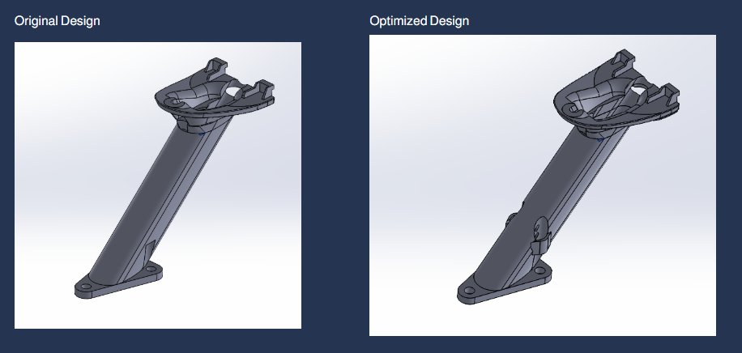
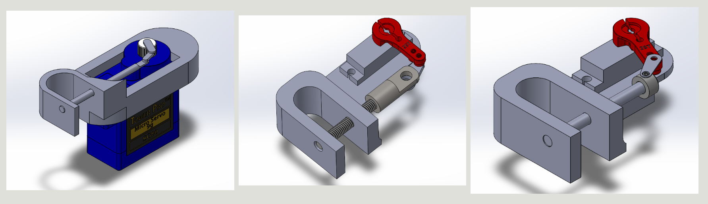
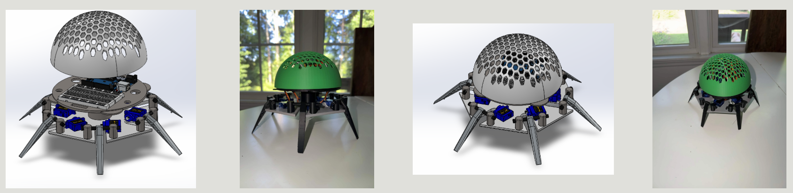

01 / DESIGN OPTIMIZATION
GPS Mounting
System
Redesigned and optimized a GPS mounting system for an aircraft by reinforcing high-stress areas prone to failure while reducing overall component weight.
Developed an improved mounting interface that enhanced ergonomics and ease of use while providing a more secure attachment to the aircraft, increasing overall durability, reliability, and functionality.

02 / DESIGN REFINEMENTS
Servo-Controlled
Payload Drop
Developed and continuously refined a servo-controlled payload drop mechanism for an aircraft as an ongoing design project.
Incorporated feedback from team leads and engineering evaluations to iteratively improve the mechanism's functionality, reliability, and ease of integration. Modified and optimized the design to ensure consistent payload deployment while meeting the aircraft's design and operational requirements.

03 / ROBOTICS & PROTOTYPING
Hexapod Robot
Design & Development
Designed and modeled a custom hexapod robot using SolidWorks, incorporating structural components, mounting features, and servo-driven actuation mechanisms.
Fabricated robot components using 3D printing, evaluated the physical prototype against the CAD design, and iterated on the design to improve functionality and performance. Developed and assembled an electromechanical system combining servo motors, control electronics, and lightweight structural elements to achieve stable, multi-axis movement.
